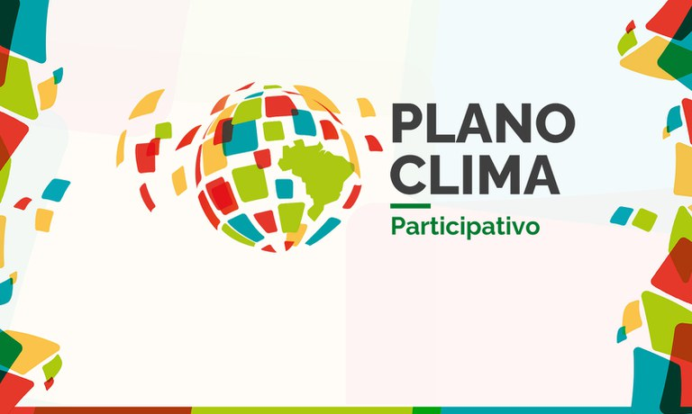
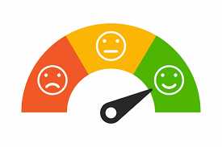
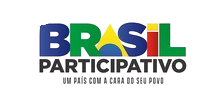

Explore o que está em alta e como isso impacta a política
Análise de Sentimentos
Nossa tecnologia analisa os comentários das propostas do Brasil Participativo, identificando se expressam apoio, crítica ou neutralidade. Dessa forma, conseguimos revelar de maneira precisa o impacto de cada ideia na sociedade. Com o Lumina, não se trata apenas de números, mas da voz da população traduzida em dados claros e acessíveis.
O Brasil Participativo: A fonte dos dados do Lumina
O site Brasil Participativo é uma plataforma do governo que permite aos cidadãos contribuírem com ideias e opiniões para a construção de políticas públicas. Nele, as pessoas podem propor sugestões, comentar em propostas já existentes e votar nas iniciativas que consideram mais relevantes. É uma ferramenta que promove a participação popular na tomada de decisões, fortalecendo a democracia de forma colaborativa.
Como funciona a nossa comunicação
Planos Participativos
Os planos participativos são iniciativas que envolvem a sociedade na elaboração de políticas públicas e diretrizes para o desenvolvimento do país. Com o objetivo de atender demandas específicas e promover maior transparência e inclusão.

Participe das discussões
Leia as propostas, deixe comentários expressando sua opinião e interaja com outros participantes.
Análise de Sentimentos
A partir dos comentários deixados no site, são utilizadas diferentes tecnologias para realizar análises que revelam a quantidade de pessoas com diferentes tipos de opinião sobre determinada proposta.

A Importância do Nosso Projeto
Um site como o Lumina, dedicado a promover a compreensão de questões políticas, desempenha um papel crucial ao oferecer informações acessíveis e confiáveis que capacitam os cidadãos a tomar decisões informadas. Ao iluminar os caminhos da política, o Lumina ajuda a construir uma sociedade mais crítica, inclusiva e comprometida com o bem-estar coletivo. Dessa forma, ele se torna uma ferramenta indispensável para promover a justiça social e a igualdade de oportunidades em todas as esferas da sociedade.
Parceiros Que Fazem a Diferença:
